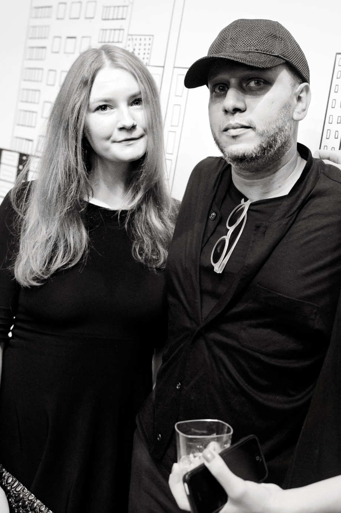
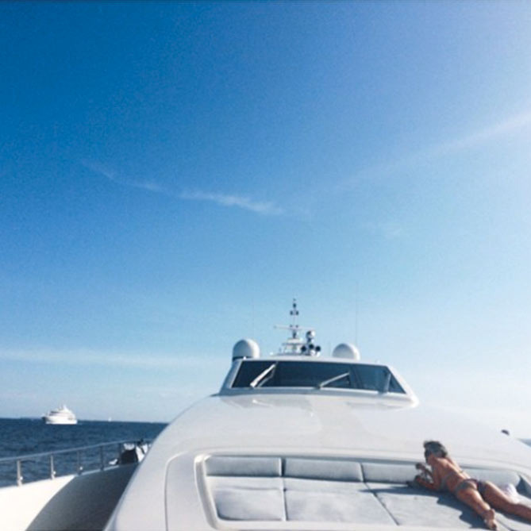

Maybe She Had So Much Money She Just Lost Track of It
Somebody had to foot the bill for Anna Delvey's fabulous new life. The city was full of marks.
By Jessica Pressler
It started with money, as it so often does in New York. A crisp $100 bill slipped across the smooth surface of the mid-century-inspired concierge desk at 11 Howard, the sleek new boutique hotel in Soho. Looking up, Neffatari Davis, the 25-year-old concierge, who goes by“Neff,” was surprised to see the cash had come from a young woman who seemed to be around her age. She had a heart-shaped face and pouty lips surrounded by a wild tangle of red hair, her eyes framed by incongruously chunky black glasses that Neff, an aspiring cinematographer with an eye for detail, identified as Céline. She was looking, she said in an accent that sounded European, for“the best food in Soho.”
“What's your name?” Neff asked, after the girl waved off her suggestions of Carbone and the Mercer Kitchen and settled on the Butcher's Daughter.
“Anna Delvey,” said the young woman. She'd be staying at the hotel for a month, she went on, which Neff also found surprising: Usually it was only celebrities who came for such long stretches. But Neff checked the system, and there it was. Delvey was booked into a Howard Deluxe, one of the hotel's midrange options, about $400 a night, with ceramic sculptures on the walls and oversize windows looking onto the bustling streets of Soho. It was February 18, 2017.
“Thanks,” said Delvey. “See you around.”
That turned out to be a promise. Over the next few weeks, Delvey stopped by often to ask Neff's advice, slipping her $100 each time. Neff would wax on about how Mr. Purple was totally washed and Vandal was for hipsters, while Delvey's eyes would flit around behind her glasses. Eventually, Neff realized: Delvey already knew all the cool places to go — not only that, she knew the names of the bartenders and waiters and owners. “This is not a guest that needs my help, ” it dawned on her.“This is a guest that wants my time.”
This was not out of the ordinary. Since she'd started working there, Neff, a Washington, D.C., native with a wedge of natural hair, giant Margaret Keane eyes, and a gap-toothed smile, had found herself playing therapist to all manner of hotel guests: husbands cheating on their wives, wives getting away from their husbands. “You just sit there and listen, because that's your concierge life,” she recalled recently, at a coffee shop near her apartment in Crown Heights.
Usually, these guests went back to their own lives, leaving Neff to hers. But February became March, and Delvey kept showing up. She’d bring food down, or a glass of extra-dry white wine, and settle near Neff’s desk to chat. Some of the other hotel employees found Anna deeply annoying. She could be oddly ill-mannered for a rich person: Please and thank you were not in her vocabulary, and she would sometimes say things that were “Not racist,” Neff said, “but classist.” (“What are you bitches, broke?” Anna asked her and another hotel employee.) But to Neff, it didn't come across as mean-spirited. More like she was some kind of old-fashioned princess who'd been plucked from an ancient European castle and deposited in the modern world, although according to Anna she came from modern-day Germany and her father ran a business producing solar panels. And despite her unassuming figure —“a sort of Sound of Music Fräulein,” one acquaintance later put it — Anna quickly established herself as one of 11 Howard's most generous guests. “People would fight to take her packages upstairs,” said Neff.“ Fight, because you knew you were getting $100.” Over time, Delvey got more and more comfortable in the hotel, swanning around in sheer Alexander Wang leggings or, occasionally, a hotel robe. “She ran that place,” said Neff. “You know how Rihanna walks out with wineglasses? That was Anna. And they let her. Bye, Ms. Delvey … ”
Anna was preparing to launch a business, a Soho House–ish type club, she told Neff, focused on art, with locations in L.A., London, Hong Kong, and Dubai, and Neff became her de facto secretary, organizing business lunches and dinners at restaurants like Seamore's and the hotel's own Le Coucou. (“That's what they do in the rich culture, is meals,” said Neff.) On occasion, when Delvey showed up while the concierge desk was busy, she would stand at the counter, coolly counting out bills until she got Neff's attention. “I'd be like, ‘Anna, there's a line of eight people.' But she'd keep putting money down.” And even though Neff had begun to think of Anna as not just a hotel guest but a friend, a real friend, she didn't hesitate to take it. “A little selfish of me,” she admitted later. “But … yeah.”
Who can blame her? This was Manhattan in the 21st century, and money is more powerful than ever. Rare is the city dweller who, when presented with an opportunity for a sudden and unexpected influx of cash, doesn't grasp for it. Of course, this money almost always comes with strings attached. Sometimes you can barely see them, like that vaudeville bit in which the pawn dives for a loose bill only to find it pulled just ahead. Still, everyone makes the reach. Because here, money is the one thing that no one can ever have enough of.
For a stretch of time in New York, no small amount of the cash in circulation was coming from Anna Delvey. “She gave to everyone,” said Neff. “Uber drivers, $100 cash. Meals — listen. You know how you reach for your credit card? She wouldn't let me.”
The way Anna spent money, it was like she couldn't get rid of it fast enough. Her room was overflowing with shopping bags from Acne and Supreme, and in between meetings, she'd invite Neff to foot massages, cryotherapy, manicures (Anna favored“a light Wes Anderson pink,” according to Neff). One day, she brought Neff to a session with a personal trainer–slash–life coach she'd found online, a svelte, ageless Oprah-esque figure who works with celebrities like Dakota Johnson.
“Stop sinking into your body,” the trainer commanded Anna. “Shoulders back, navel to spine. You are a bright woman; you want to be a businesswoman. You gotta be staying strong on your own power.”
Afterward, as Neff panted on the sidelines, Anna bought a package of sessions. “It was, I'm not lying, $4,500,” said Neff.
Anna paid cash.
Neff's boyfriend didn't understand why she was spending so much time with this weird girl from work. Anna didn't understand why Neff had a boyfriend. But he was rich, Neff protested. He'd promised to finance her first movie. “Dump him,” Anna advised. “I have more money.” She would finance the movie.
Neff did dump the guy. Not because of what Anna had said, although she had no reason to doubt it. Her new friend, she discovered, belonged to a vast and glittering social circle.“Anna knew everyone, ” said Neff. At night, she'd taken to hosting large dinners at Le Coucou, attended by CEOs, artists, athletes, even celebrities. One night, Neff found herself seated next to her childhood idol, Macaulay Culkin.“Which was awkward,” she said. “Because I had so many questions. And he was right there. But they were talking about, like, friend stuff. So I never got the chance to be like, ‘So, you the godfather to Michael Jackson's kids?”
Despite her seemingly nomadic living situation, Anna had long been a figure on the New York social scene.“She was at all the best parties,” said marketing director Tommy Saleh, who met her in 2013 at Le Baron in Paris during Fashion Week. Delvey had been an intern at European scenester magazine Frieze, Coachella, Art Basel. “She introduced herself, and she was a sweet girl, very polite,” said Saleh. “Then we're just hanging with my friends all of a sudden.”
Soon, Anna was everywhere too. “She managed to be in all the sort of right places,” recalled one acquaintance who met Anna in 2015 at a party thrown by a start-up mogul in Berlin. “She was wearing really fancy clothing” — Balenciaga, or maybe Alaïa —“and someone mentioned that she flew in on a private jet.” It was unclear where exactly Anna came from — she told people she was from Cologne, but her German wasn't very good — or what the source of her wealth was. But that wasn't unusual. “There are so many trust-fund kids running around,” said Saleh. “Everyone is your best friend, and you don't know a thing about anyone.”
After a gallerist at Pace introduced her to Michael Xufu Huang, the extremely young, extremely dapper collector and founder of Beijing's M Woods museum, Anna proposed they go together to the Venice Biennale. Huang thought it was“a little weird” when Anna asked him to book the plane tickets and hotel on his credit card. “But I was like, Okay, whatever, ” he said. It was also strange, he noticed during their time there, that Anna only ever paid with cash, and after they got back, she seemed to forget she'd said she'd pay him back. “It was not a lot of money,” he said. “Like two or three thousand dollars.” After a while, Huang kind of forgot about it too.
When you're superrich, you can be forgetful in this way. Which is maybe why no one thought much of the instances in which Anna did things that seemed odd for a wealthy person: calling a friend to have her put a taxi from the airport on her credit card, or asking to sleep on someone's couch, or moving into someone's apartment with the tacit agreement to pay rent, and then … not doing it. Maybe she had so much money she just lost track of it.
The following January, Anna hired a PR firm to put together a birthday party at one of her favorite restaurants, Sadelle's in Soho. “It was a lot of very cool, very successful people,” said Huang, who, while aware Anna owed him money for their Venice trip, remained mostly unconcerned about it, at least until the restaurant, having seen Polaroids of Huang and Anna at the party on Instagram, messaged him a few days later.“They were like, ‘Do you have her contact info?' ” he says now. “ ‘Because she didn't pay her bill.' Then I realized, Oh my God, she is not legit. ”
As Anna bounced around the globe, there was some speculation as to where her means to do this came from, though no one seemed to care that much so long as the bills got paid.
“I thought she had family money,” said Jayma Cardoso, one of the owners of the Surf Lodge in Montauk. Delvey's father was a diplomat to Russia, one friend was sure. No, another insisted, he was an oil-industry titan. “As far as I knew, her family was the Delvey family that is big in antiques in Germany,” said another acquaintance, a millionaire tech CEO. (It is unclear what family he was referring to.) The CEO met Anna through the boyfriend she was running around with for a while, a futurist on the TED-Talks circuit who'd been profiled in The New Yorker. For about two years, they'd been kind of like a team, showing up in places frequented by the itinerant wealthy, living out of fancy hotels and hosting sceney dinners where the Futurist talked up his app and Delvey spoke of the private club she wanted to open once she turned 25 and came into her trust fund.
Then it was 2016. The Futurist, whose app never materialized, moved to the Emirates, and Anna came to New York on her own, determined to make her arts club a reality, although she worried to Marc Kremers, the London creative director helping her with branding, that the name she'd come up with — the Anna Delvey Foundation, or ADF — was“too narcissistic.”
Early on, Anna and architect Ron Castellano, a friend of her Purple cohort, had scouted a building on the Lower East Side, but it turned out to be too close to a school to get a liquor license, and soon Anna had shifted her aspirations uptown. Through her connections, she'd befriended Gabriel Calatrava, one of the sons of famed architect Santiago. His family's real-estate advisory company, Calatrava Grace, had helped her“secure the lease,” she informed people, on the perfect space: 45,000 square feet occupying six floors of the historic Church Missions House, a landmarked building on the corner of Park Avenue and 22nd. The heart of the club would be, she said, a“dynamic visual-arts center,” with a rotating array of pop-up shops curated by artist Daniel Arsham, whom she knew from her Purple days, and exhibitions and installations from blue-chip artists like Urs Fischer, Damien Hirst, Jeff Koons, and Tracey Emin. For the inaugural event, Anna told people, the artist Christo had agreed to wrap the building. Some people raised their eyebrows at the grandiosity of this plan, but to others it made sense, in a New York kind of way. The building's owner, developer Aby Rosen, was no stranger to the private-club genre; a few years earlier, he'd bought a midtown building and opened the Core Club, which housed an art collection. He also happened to own 11 Howard.
With the help of Calatrava executive Michael Jaffe, a former employee of Rosen's RFR realty firm, Anna soon began meeting with big names in the food-and-beverage world to discuss possibilities in the space. One was André Balazs, who, according to Anna, suggested they add two floors of hotel rooms. Another was Richie Notar, one of the founders of Nobu, who did a walk-through of the building with Anna as she described her vision, which included three restaurants, a juice bar, and a German bakery. “Apparently her family was prominent in Germany,” Notar said,“and funding this big project for her.”
But a project of this size required more capital than even someone of Anna's apparently considerable resources could manage: approximately $25 million,“in addition to $25m existing,” Anna wrote in an email to a prominent Silicon Valley publicist in 2016. “If you think this is something you could help us with and have anyone in mind who would be a good cultural fit for this project.” But by fall, Anna had turned on the idea of private investors, in part because she didn't want anyone telling her what to do. “If we were to bring in investors, they would say, ‘Oh, she's 25; she doesn't know what she's doing,” Anna explained later. “I wanted to build the first one myself.”
To help secure a loan, one of Anna's“finance friends” had told her to get in touch with Joel Cohen, best known as the prosecutor of Jordan Belfort, a.k.a. the Wolf of Wall Street. Cohen now worked at Gibson Dunn, a large firm known for its real-estate practice. He put her in touch with Andy Lance, a partner who happened to have the exact kind of expertise that Anna was looking for. In the past, she'd complained to friends about feeling condescended to by older male lawyers because of her age and gender. But Lance was different. “He knows how to talk to women,” she said. “And he would explain to me the right amount, without being patronizing.” According to Anna, she and Lance spoke every day. “He was there all the time. He would answer in the middle of the night, or when he was in Turks and Caicos for Christmas.”
After filling out Gibson Dunn's new-client-intake form, which included checking boxes that confirmed the client had the resources to pay and would not embarrass the firm, Lance put Anna in touch with several large financial institutions, including Los Angeles–based City National Bank and Fortress Investment Group. “Our client Anna Delvey is undertaking a very exciting redevelopment of 281 Park Avenue South, backed by a marquee team for this type of venue and space,” Lance wrote in one email, in which he explained that Anna needed the loan because“her personal assets, which are quite substantial, are located outside the US, some of them in trust with UBS outside the US.” The monies she received, he added, would be“fully secured” by a letter of credit from the Swiss bank. (Lance did not respond to requests for comment.)
When the banker at City National asked to see the UBS statements, he received a list of figures from a man named Peter W. Hennecke.“Please use these for your projections for now,” Hennecke wrote in an email. “I'll send the physical statements on Monday”.
“Question: Are you from UBS?” the banker replied, puzzled by Hennecke's AOL address.
No, Anna explained. “Peter is head of my family office.”
With Anna in fund-raising mode, the artists and celebrity friends at her dinners were gradually supplanted by men with“Goyard briefcases and Rolexes, and Hublot, like that Jay-Z lyric,” according to Neff, who at one point looked across the table at Le Coucou and recognized the face of infamous“pharma bro” Martin Shkreli, who would later be convicted of securities fraud. Anna introduced Shkreli as a“dear friend,” although it was really the only time they'd met, Shkreli told New York in a letter from the penitentiary; Anna was close with one of his executives.“Anna did seem to be a popular ‘woman about town' who knew everyone,” he wrote. “Even though I was nationally known, I felt like a computer geek next to her.”
As for Neff, she was not as discreet as she had been with Macaulay Culkin, tweeting after the fact that Shkreli had played her and Anna the leaked tracks from Tha Carter V, the delayed Lil Wayne album he'd acquired. Anna was furious, but Neff refused to delete the tweet. “I wanted everybody to know that I heard this album that the world is waiting on! But Anna was pretty mad. She didn't come down to my desk for maybe three days.”
In the meantime, though, Neff said she had another visitor: Charlie Rosen. Aby Rosen's sons were generally regarded as pretty-boy trust-fund kids — a few years back, they made headlines for reportedly racing ATVs over piping-plover nests in the Hamptons — but Neff liked them, and when Charlie stopped by one evening, she dropped that she'd recently been to visit the Park Avenue building that one of the guests, a young woman, was leasing from their father for an arts club.
Rosen looked confused. He didn't appear to have ever heard of Anna or her project.“What room is she staying in?” he asked. When Neff told him, he looked skeptical. “If my dad has someone buying property from him staying here,” he said,“would she be in a Deluxe or would she be in a suite?”. He had a point. A few days later, Neff broached the subject. “Why did you tell me you're buying property from Aby but you're not staying in a suite?” she asked. Anna looked surprised but answered immediately. “She said, ‘You ever have someone do so many favors for you, you kind of just want to pay them back in silence?' ”.“
Genius, ” Neff said.
Soon it was April. Spring was poking its head through the gray New York City sidewalks, and the weather was getting warm enough to sip rosé on rooftops, one of Anna's favorite activities, although the circle she was doing this with, Neff noticed, was smaller than it had been in the past and mainly consisted of herself; Rachel Williams, a photo editor at Vanity Fair ; and the trainer, who, although she was notably older, had taken a motherly interest in her client. “I know a lot of trust-fund babies, and I was impressed that Anna had something that she wanted to do, instead of, you know, living like a Kardashian,” said the trainer. Plus, she said, Anna seemed lonely. Neff noticed the same thing. “What happened to your friends?” she asked Anna after one night out. “Oh,” Anna said vaguely. “They're all mad I left Purple.”
She was too busy for parties, anyway, she said, what with building her business.
It was true that Anna was spending a lot of time working, frowning at her in-box and huffing into the phone. “She was always on the phone with lawyers,” said Neff, who would sort of listen in from the concierge desk. “They were always toning her down. Like, ‘Anna, you're trying to make something that's worth this much be worth that much, and that's just not how it works. ' ”
Back in December, City National had turned down her loan request — a management decision is how Anna framed it — and while the ever-loyal Andy Lance was reaching out to hedge funds and banks for alternate financing, executives at RFR were pressuring her to come up with the money fast, Anna said. If she didn't, they were going to give it to another party, rumored to be the Swedish museum Fotografiska. “How do they even pay for that?” Anna fumed. “It's like two old guys.”
In the meantime, Anna was having cash-flow issues of her own. One night, Anna asked Neff to dinner at Sant Ambroeus in Soho. They were by themselves, which was unusual. Even more unusually, at the end of the meal, Anna's card was declined. “Here,” she told the waiter, handing him a list of credit-card numbers. In Neff's admittedly foggy memory, they were in a small book, though it may have been the Notes app on her phone. But she's clear on what happened next. “The waiter went back to his station and began entering the numbers. There were like 12, and I know the guy tried them all,” she said. “He was trying it and then shaking his head. And then I started to sweat, because I knew the bill was mine.” While the amount — $286 — was a fraction of what Anna usually spent, it was a lot for Neff, who quietly transferred money from her savings to cover the bill. Doing so made her feel sick, but after all the money Anna had spent on her, she understood it was her turn.
Not long after, Neff's manager called and asked her to address a delicate issue: It seemed 11 Howard didn't have a credit card on file for Anna Delvey. Because the hotel had been so new when she arrived, and because she was staying for such an unusually long time, and because she was a client of Aby Rosen's and a very valued guest, it had agreed to accept a wire transfer. But a month and a half later, no such transfer had arrived, and now Delvey owed the hotel some $30,000, including charges from Le Coucou that she'd been billing to her room.
Neff wasn't sure what to think. She was sure Anna was good for the money. The day after the Sant Ambroeus debacle, she'd paid her back triple. In cash.
When Anna came by her desk the next day, Neff took her aside and told her that management had said Anna needed to pay her bill. Anna nodded, her eyes inscrutable behind her sunglasses. There was a wire transfer on the way, she said. It should arrive soon. Then, about midway into her shift, Anna came by the desk again and, with a mischievous smile on her face, told Neff to expect a package. When it arrived, Neff opened it to find a case of 1975 Dom Pérignon, with Anna's instructions to distribute it among the staff. Neff hesitated. Gifts, especially of the liquid variety, needed to be approved by management. “They were like, ‘How do we look approving this if she hasn't paid us?' So they went after her. ‘We need the money or we're locking you out.' ”
One morning, Anna showed up to her morning session with the trainer looking visibly upset.“Can we do a life-coaching session?” she pleaded. She was trying to build something, to do something, she went on, and no one was taking her seriously.“They think because I am young, they think I have all this money,” she sobbed.“I told them the money would be there soon. I'm having it transferred.”
The trainer told her to breathe.“I feel like you are in a little over your head,” she offered.“Maybe you just need a break.”
Then something miraculous happened. Citibank sent 11 Howard a wire transfer on behalf of Ms. Anna Delvey for $30,000. Neff called Anna on her cell phone. “Where you at?” she asked. Across the street at Rick Owens, Anna replied. Neff checked the clock: It was her lunch break. When she came through the door of the store, Anna was holding up a T-shirt. “Look what I found,” she said, beaming. “It's perfect for you.” She was right: The shirt was the exact orangey red of the creepy bathroom scene in The Shining, one of Neff's favorite movies, and the signature color of the brand Neff was trying to launch, FilmColours. It was also $400. “I'd love to buy it for you,” Anna said.
A few weeks later, Anna told Neff she was going to Omaha. “I'm going to see Warren Buffett,” she announced, grandly. One of her bankers had gotten her on the list to Berkshire Hathaway's annual investment conference, and she'd decided to bring the executive from Martin Shkreli's hedge fund, who was fun and a friend of his, on the private jet she'd rented to take them there. “I'll be back,” she promised Neff.
But there was still a problem with her account at 11 Howard. Despite being repeatedly asked by hotel management, she still hadn't given the hotel a working credit card, and her charges continued to mount. Following through on their warning, hotel employees changed the code on the lock of Anna's room and put her things in storage. Neff texted Anna in Omaha to deliver the bad news.
“How can they do that?” Anna asked indignantly, although if she was truly shocked, it didn't last long. The conference had been great, she said. The best part had happened the very last day, when, having exhausted all the opportunities for luxury Omaha had to offer, Anna and her party had taken a cab driver's suggestion to check out the zoo. They hadn't expected much, but then, while they were riding around on their golf carts, they'd stumbled on a private dinner hosted by Buffett for a slew of VIPs. “Everyone was there,” she said. “Like, Bill Gates was there.”
For a little while, they'd watched through the glass, then they'd slipped in and mingled among them.

When Anna got back to 11Howard, she made her fury known. She was going to purchase web domains in all of the managers' names, she told Neff, a trick she'd learned from Shkreli:“They're going to pay me one day.” Also, she was moving out — as soon as she got back from Morocco. Inspired by Khloé Kardashian, she'd reserved a $7,000-a-night riad with a private butler at La Mamounia, an opulent resort in Marrakech, and asked Neff if she wanted to join herself, the trainer, Rachel Williams, and a videographer, who she was hoping would make“a behind-the-scenes documentary” about the process of creating her arts foundation on a vacation. They'd wake up to massages, she said, and spend their days exploring the souk, lounging by the pool. Neff wanted to go, badly. But there was no way the hotel would let her take off eight days. “Just quit,” Anna said airily.
For a day or two, Neff considered it. But her mom told her she had a bad feeling about it. “Nothing in life is free,” she said. So Neff stayed behind, morosely following her friend's journey on Instagram. “I was pretty jealous,” she said.
As she would find out, the pictures didn't exactly tell the whole story. Two days in, after coming down with a nasty case of food poisoning, the trainer had gone back to New York early.
About a week later, the trainer got a call from Anna, who was alone at the Four Seasons in Casablanca and hysterical. There was, she sobbed, a problem with her bank. Her credit cards weren't going through, and the hotel was threatening to call the police. After calming Anna down, the trainer asked to speak to management. “They were like, ‘She is going to be arrested,' ” she said.
The trainer was torn: On the one hand, this was not her problem. On the other, Anna was her client, her friend, and someone's daughter. Offering a prayer to the universe, the trainer gave the hotel her credit-card number and, when it failed to go through, made the requisite calls to her bank. When it still failed to go through, she went the extra mile: She called a friend and had her give her credit-card information. When that failed to work, the hotel conceded the problem might be on their end.
Later, the trainer would recognize this as a substantial gift from the Universe. At the time, she promised the hotel in Casablanca that Anna would make them whole. “Trust me,” she told them. “I know she's good for it. I just spent two days with her in Marrakech.” When Anna came back on the phone, the trainer told her she was booking her a ticket back to New York. Anna snuffled her thanks. Then she asked for one last favor:“Can you get me first class?” she asked.
A few days later, a silvery Tesla pulled up in front of 11 Howard. Neff, at the concierge desk, felt her cell phone buzz. “Look out the window,” said a familiar German accent. The car's futuristic doors slowly raised up to reveal Anna. “I'm here to get my stuff,” she said.
Anna was making good on her promise to leave 11 Howard. She was moving downtown to the Beekman Hotel, she told Neff, who watched her drive away in a car that she only later realized someone must have rented to her. Moving didn't stem Anna's mounting troubles. Not only did she owe the hotel, but, over in London, Marc Kremers, the designer she'd hired to do her branding work, was getting antsy: The £16,800 fee Anna had promised would arrive by wire almost a year before had yet to materialize, and now emails to Anna's financial adviser, Peter W. Hennecke, were bouncing back. “Peter passed away last month,” Anna replied. “Please refrain from contacting or mentioning any communication with him going forward.”
In retrospect, her terseness was understandable. Things were rapidly deteriorating for Anna Delvey in New York. Twenty days into her stay, the Beekman Hotel, having realized it did not have a working credit card on file and having not received the promised wire transfer for her balance of $11,518.59, locked Anna out of her room and confiscated her belongings. A subsequent two-day stay at the W Hotel downtown ended in a similar fashion, and by July 5, Anna was effectively homeless, wandering the streets in threadbare Alexander Wang sportswear.
Late one night, she made her way to the trainer's apartment and dialed her from outside. “I'm right near your building,” she said. “Do you think we could talk?”
The trainer hesitated: She was in the middle of a date. But there was a desperate note in Anna's voice. She made her way to her lobby, where she found Anna with tears streaming down her face. “I'm trying to do this thing,” she sobbed. “And it's so hard.”
Maybe she should call her family, the trainer suggested. She would, Anna replied, but her parents were in Africa. “Do you mind if I crash at your place tonight?” No, the trainer said, she had a date. “I really just don't want be alone,” Anna sniffled. “I might do something.”.
The date hid in the bedroom while the trainer made a bed for her unexpected houseguest and offered her a glass of water. “Do you have any Pellegrino?” Anna asked. There was one large bottle left. Anna ignored the two glasses placed on the counter and began swilling from the bottle. “I'm so tired,” she yawned.
As Anna slept, the trainer's spidey sense began to tingle. “I mean, I'm born and raised in New York,” she told me later. “I'm not stupid.” She texted Rachel Williams, who told her about what had happened at La Mamounia: Apparently, after the trainer returned to New York, the credit card Anna had used to book the hotel was found to be nonfunctional, and when Anna was unable to produce a new form of payment and a pair of threatening goons appeared in the doorway, the photo editor was forced to put the balance — $62,000, more than she was paid in a year — on the Amex she sometimes used for work expenses. Anna had promised her a wire transfer, but a month later, all Rachel received was $5,000, and her excuses had turned “Kafkaesque.”
The following morning, the trainer resolved to draw a clear boundary. After lending Anna a clean (and flattering) dress, she sent her on her way with a gratis motivational speech. But when Anna walked out the door, she left her laptop behind. The trainer was having none of it. She deposited the computer at the front desk and texted Anna that she could pick it up there.
That evening, the trainer got a call from her doorman. Anna was in the lobby. He'd told her that the trainer was out, at which point she'd asked for access to her suite. When he refused, Anna had resolved to wait for the trainer to return home.
“Let me know when she goes,” the trainer told the doorman.
But hours passed and Anna didn't budge. “They were like, She's still here. She's texting, ” the trainer recalls.“I was like, Oh my God, I'm a prisoner of my own house. ” It wasn't until after midnight that Anna finally left the building.
The relief the trainer felt soon turned into worry. “I started calling the hotels to see where she was staying, and each hotel was like, ‘ This girl, ' she said.
She found out why later that month, when both the Beekman and the W Hotel filed charges against Anna for theft of services. WANNABE SOCIALITE BUSTED FOR SKIPPING OUT ON PRICEY HOTEL BILLS, blared the headline in the Post , which referenced an incident in which Anna attempted to leave the restaurant at Le Parker without paying. “Why are you making a big deal about this?” she'd protested to police. “Give me five minutes and I can get a friend to pay.”
But no friends arrived. Maybe it was all a misunderstanding, as Anna told Todd Spodek, the criminal attorney she hired to fight the misdemeanor charges. Maybe the poised young woman in the Audrey Hepburn dress who'd cold-called him on his cell phone repeatedly, insisting it was an emergency until he'd agreed to come into his office on a Saturday, really was a wealthy German heiress, he thought, as his 4-year-old pasted Paw Patrol stickers up one of Anna's bare arms, and her credit cards had gotten jammed up, or someone had taken away her trust fund. Just in case, Spodek, whose everyday clientele includes grifters, dog-murderers, femme fatales, rapists, and cybercriminals, among other miscreants, had her sign a lien on all of her assets, one that would ensure he got paid. On her way out, Anna asked a favor. “I kind of need a place to stay,” she said. Spodek demurred. The last thing his wife wanted was for him to bring his work home with him.
Anna again got in touch with the trainer, who did not invite her to stay but instead organized an intervention at a nearby restaurant, during which she and Rachel Williams attempted to get answers: about why Anna had done what she'd done, who she really was, if she'd ever planned on paying anyone back. Anna hemmed and hawed and dissembled and prevaricated and, as the women got increasingly angry, allowed two fat tears to roll down her cheeks. “I'll have enough to pay everyone,” she sniffled. “Once I get the lease signed …”
“Anna,” the trainer said, summoning her last shred of patience. “The building has been rented.”
She held up her iPhone and showed her the headline: FOTOGRAFISKA SIGNS A LEASE FOR ENTIRE 45K SF AT ABY ROSEN'S BUILDING.
“That's fake news,” Anna said.
“Fotografiska really get the building?” sighed the tiny, accented voice after the recording identifying the call as coming from Rikers Island, where Anna Delvey, a.k.a. Anna Sorokin, has been remanded without bail since October 2017.
As it turned out, Anna's hotel bills were merely the first loose threads in a web of fraudulent activity, one that began to unravel in November 2016, after she submitted documents claiming a net worth of €60 million in Swiss accounts to City National Bank in pursuit of a $22 million dollar loan. The following month, she submitted the same documents to Fortress in an attempt to secure a $25 million to $35 million loan. After that bank asked her for $100,000 to perform due diligence, she convinced a representative at City National to extend her a $100,000 line of credit, which she then wired to Fortress. Then, apparently spooked by Fortress's decision to send representatives to Switzerland to personally check her assets, she withdrew herself from the process halfway through, wiring the remaining $55,000 to a Citibank account that she used for“personal expenses … shopping at Forward by Elyse Walker, Apple, and Net-a-Porter,” according to the New York District Attorney's office. Then, in April, she deposited $160,000 worth of bad checks into the same account, managing to withdraw $70,000 before they were returned, which is how she managed to pay off 11 Howard and, ostensibly, buy Neff's T-shirt and the domain names of the managers of the hotel. (“They called me down to the office. They said, ‘Neff, did you know about this?' And I started dying laughing. I thought it was a boss move.”) In May, Anna convinced the company Blade to charter her a $35,000 jet to Omaha by sending them a forged confirmation for a wire transfer from Deutsche Bank. It might have helped that she had the business card of the CEO, whom she'd met in passing at Soho House but who says he didn't actually know her at all. Not wanting to leave Anna homeless after their intervention last summer, the trainer and a friend agreed to put Anna up at a hotel for one night, after having the hotel remove the mini-bar and giving strict instructions not to allow her any room service. She subsequently checked in to the Bowery Hotel for two nights, sending the hotel a receipt for a wire transfer from Deutsche Bank that never came. Rachel Williams, City National, and others also received phony wire-transfer receipts, which a representative of the bank identified as forged. Anna's “family adviser,” the late Peter W. Hennecke, seems to have been a fictional character; his cell-phone number belonged to a now-defunct burner phone from a supermarket, New York found. (A living Peter Hennecke did not return calls for comment.) Later in the summer, with her misdemeanor charges pending, Anna deposited two bad checks into an account at Signature Bank, netting her $8,200, which is how she managed to take what she said was a “planned trip” to California, where she was arrested outside of Passages in Malibu and brought back to New York to face six counts of grand larceny and attempted grand larceny, in addition to theft of services, according to the indictment. “I like L.A.,” she giggled when I visited her at Rikers this past March. “L.A. in the winter, New York in spring and autumn, and Europe in summer.”
People looked over curiously. “She's like a unicorn in there,” Todd Spodek, Anna's lawyer, had told me. “Everyone else is in there for like, stabbing their baby daddy.” He had mentioned that his client was taking incarceration unusually in stride, and indeed, this appeared to be the case.
“This place is not that bad at all actually,” Anna told me, eyes sparkling behind her Céline glasses. “People seem to think it's horrible, but I see it as like, this sociological experiment.”
She'd made friends, of course. The murderers were the most interesting to her. “There are couple of girls who are here for financial crimes as well,” she told me.“This one girl, she's been stealing other people's identities. I didn't realize it was so easy. ”
Over the course of three months, I spoke to Anna over the phone and visited her several times, occasionally bringing her copies of Forbes, Fast Company, and The Wall Street Journal at her request. Clad in a beige jumpsuit, her $800 highlights faded and her $400 eyelash extensions long fallen away, she looked like a normal 27-year-old girl, which is what she is.
Anna Sorokin was born in Russia in 1991, and moved to Germany in 2007, when she was 16, with her younger brother and her parents, who, after being independently tracked down by and speaking with New York, asked to remain anonymous, as news of their daughters arrest has not yet reached the small rural community where they live.
Anna attended high school in Eschweiler, a small working-class town 60 kilometers outside Cologne, near the Belgian and Dutch border. Her classmates remember her as quiet, with an unwieldy command of German. Her father had worked as a truck driver and later as an executive at a transport company until it became insolvent in 2013, whereupon he opened a heating-and-cooling business specializing in energy-efficient devices. Anna's father was circumspect about the family's finances, possibly out of a not-unreasonable fear of being held responsible for his daughter's debts, which it was suggested to New York multiple times are larger and more wide-ranging than officially documented. “She screwed basically everyone,” said the acquaintance in Berlin, who passed on the names of several individuals who were said to have had amounts large and small borrowed or stolen but were too embarrassed to come forward. (Also paranoid: “I heard she commissions these stories,” I was told more than once, after I reached out to alleged victims. “They're strategic leaks. ”)
In any case, according to Anna's father: “Until now, we have never heard of any trust fund.” That said, he went on, the family did support her to an extent after Anna graduated from high school in 2011. She moved first to London, where she attended Central Saint Martins College, then she dropped out and returned to Berlin, where she interned in the fashion department of a public-relations firm before relocating to Paris, where she landed a coveted internship at Purple magazine and became Anna Delvey. Her parents, who say they do not recognize the surname, told New York : “We always paid for her accommodations, her rent, and other matters. She assured us these costs were the best investment. If ever she needed something more at one point or another, it didn't matter. The future was always bright.”
Anna, in jail, told me: “My parents had high expectations. They always trusted me with my decision-making. I guess they regret it now.”
Over the course of our conversations, Anna never admitted any guilt, although she did say she felt bad about what happened with Rachel Williams. “I am very upset that things went that way and I didn't mean for it to happen,” she said. “But I really can't do anything about it, being in here.”
She expressed frustration about not being able to bail herself out. “If they were doubting — ‘Oh, she can't pay for anything'— why not give me bail and see?” she challenged. “If I was such a fraud, it would be such an easy resolution. Will she bail herself out?”
She was frustrated with the New York Post's characterization of her as a “wannabe socialite” —“I was never trying to be a socialite,” she pointed out. “I had dinners, but they were work dinners. I wanted to be taken seriously” — and the District Attorney's portrayal of her as, as Anna put it,“a greedy idiot” who had committed a kind of harebrained Ponzi scheme in order to go shopping. “If I really wanted the money, I would have better and faster ways to get some,” she groused. “Resilience is hard to come by, but not capital.”
She seemed most interested in expressing that her plans to create the Anna Delvey Foundation were real. She'd had all of those conversations and meetings and sent all of those emails and commissioned those materials because she thought it was actually going to happen. “I had what I thought was a great team around me, and I was having fun,” she said. Sure, she said, she might have done a few things wrong. “But that doesn't diminish the hundred things I did right.”
Maybe it could have happened. In this city, where enormous amounts of invisible money trade hands every day, where glass towers are built on paperwork promises, why not? If Aby Rosen, the son of Holocaust survivors, could come to New York and fill skyscrapers full of art, if the Kardashians could build a billion-dollar empire out of literally nothing, if a movie star like Dakota Johnson could sculpt her ass so that it becomes the anchor of a major franchise, why couldn't Anna Delvey? During the course of my reporting, people kept asking: Why this girl? She wasn't superhot, they pointed out, or super-charming; she wasn't even very nice. How did she manage to convince an enormous amount of cool, successful people that she was something she clearly was not? Watching the Rikers guard shove Fast Company into a manila envelope, I realized what Anna had in common with the people she'd been studying in the pages of that magazine: She saw something others didn't. Anna looked at the soul of New York and recognized that if you distract people with shiny objects, with large wads of cash, with the indicia of wealth, if you show them the money, they will be virtually unable to see anything else. And the thing was: It was so easy.
“Money, like, there's an unlimited amount of capital in the world, you know?” Anna said to me at one point. “But there's limited amounts of people who are talented. ”
Additional reporting by Austin Davis and Naima Wolfsperger in Germany.
This article appears in the May 28, 2018, issue of New York Magazine.